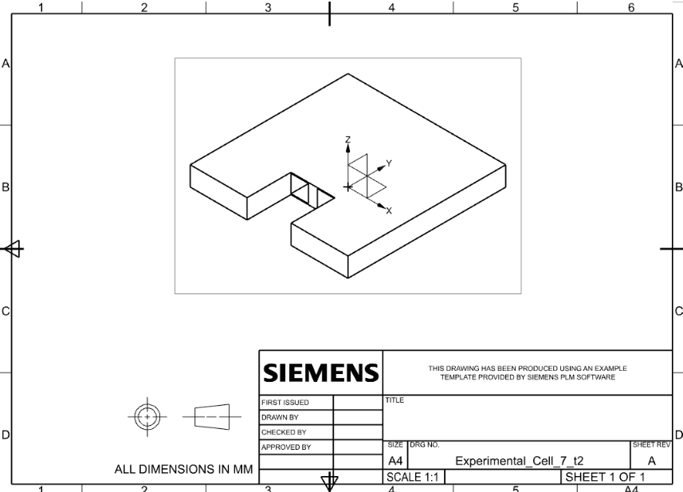
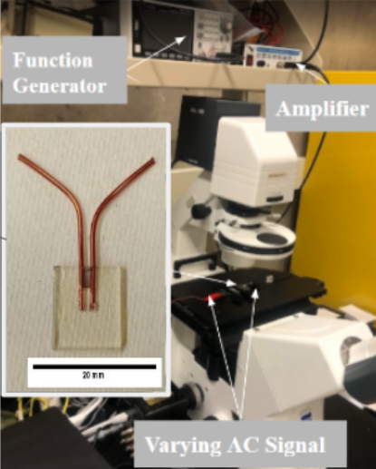
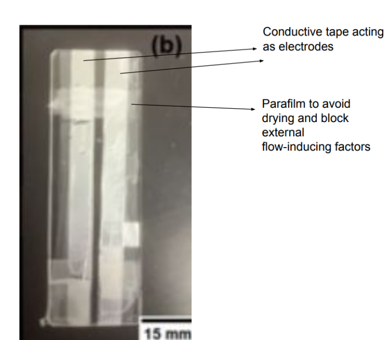
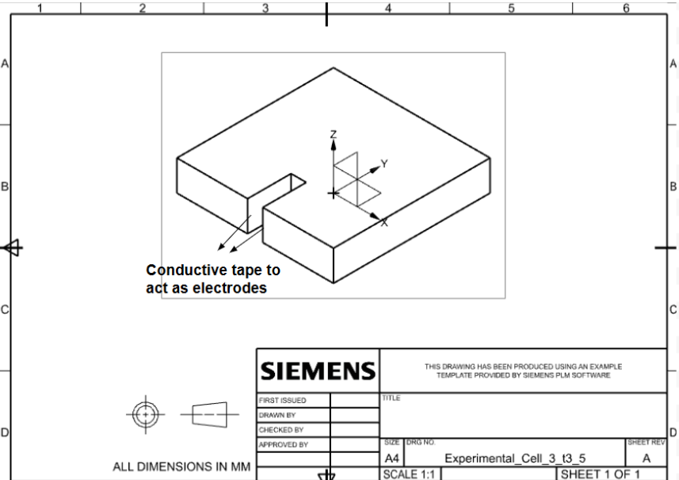
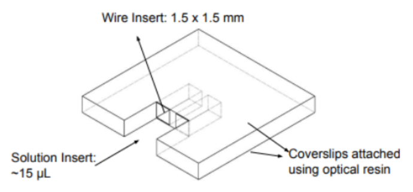

MECHANICAL DESIGN · ADDITIVE MANUFACTURING · EXPERIMENTAL SYSTEMS
Experimental Cell for Electric-Field-Directed Assembly
A custom experimental platform developed through nine design iterations to study the assembly of microscale particles under applied AC electric fields.

THE CHALLENGE
Building a repeatable microscale experiment
Studying electric-field-directed particle assembly required an experimental cell capable of holding a small liquid sample, positioning two electrodes at a controlled spacing, and remaining compatible with optical microscopy.
Early configurations enabled initial testing, but challenges with electrode alignment, sample containment, assembly, and repeatability motivated the development of a purpose-built experimental platform.
EXPERIMENTAL SYSTEM
Designed as part of a complete test setup
The experimental cell was integrated with an optical microscope, function generator, and voltage amplifier to observe particle behavior under varying AC electric-field conditions.
Testing each cell design as part of the complete experimental system exposed practical limitations that could not be identified from CAD alone. These observations directly informed later design iterations.

DESIGN PROCESS
Nine iterations of experimental development
The experimental cell evolved through nine design iterations as testing revealed new challenges in electrode placement, sample containment, alignment, manufacturability, and experimental repeatability.
Each version was informed by limitations observed during real experiments. Iterations 1, 5, and 9 highlight three major stages in the development of the system.
ITERATION 01
A manually assembled starting point
The first experimental cell used conductive tape as electrodes and Parafilm to contain the particle solution, reduce evaporation, and limit external flow-inducing effects.
This simple configuration enabled initial electric-field experiments and helped establish the fundamental requirements for future designs. However, manual assembly made electrode positioning, sample geometry, and sealing difficult to reproduce consistently between tests.

ITERATION 05
First purpose-built cell
By the fifth iteration, the design had transitioned from a manually assembled configuration toward a custom cell geometry intended to better control the electrode and sample regions.
However, accommodating manually applied conductive tape required the cell to be relatively thick, making it easier to handle but creating clearance issues during optical microscopy. The large front opening also increased evaporation, introducing unwanted flow into the sample. These limitations drove the next iteration toward thinner, more integrated electrodes and a more enclosed sample region.

ITERATION 09 · CURRENT DESIGN
An integrated experimental architecture
The ninth iteration incorporates lessons learned across the previous versions into a more integrated cell architecture.
The current design includes dedicated wire inserts, a controlled solution region, and coverslips attached using optical resin. These features were developed to improve electrode placement, sample control, optical access, and consistency between experiments.
The geometry was intentionally kept simple to support rapid fabrication and iteration. Because the cell continued to evolve with experimental results, a minimal design made it easier to modify individual dimensions, fabricate new versions, and test changes without redesigning the entire system.

CURRENT DESIGN
The result of iterative testing
The final design represents the accumulated development of nine prototypes rather than a single CAD exercise. Each iteration translated an observed experimental limitation into a new mechanical design requirement.
The result is a custom experimental platform designed specifically for repeatable electric-field-directed assembly experiments under optical microscopy.